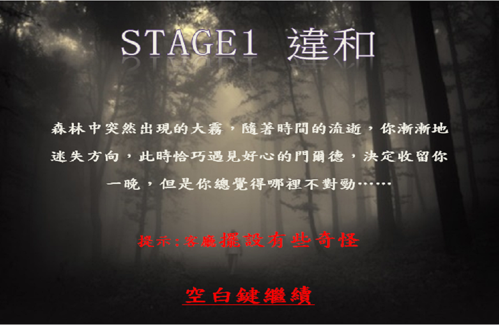

簡介
過去曾領導過現實的密室逃脫的遊戲製作團隊，因此想嘗試將密室逃脫製作成電腦遊戲，透過不一樣的呈現方式，加入恐怖遊戲的元素，帶給玩家不一樣的密室逃脫遊戲，於是找了也對遊戲製作有興趣的同學開始開發。

劇情的部分參考一則我滿喜歡的海龜湯「深山」內容而來，玩家扮演的主角受困在暴雨的深山中，此時一位好心人士接待主角到他家休息，沒想到山中的大宅卻隱藏了無盡的秘密與殺機...

整款遊戲使用令人不安的音樂當背景，且在觸發特殊事件後會出現鬼來嚇人，還有經典的無限迴廊等橋段，玩家除了跟時間競賽更得跟自己的心魔作戰，除此之外整款遊戲使用了超過100樣的道具，20道以上的謎題，且擁有三種不同結局，保證讓玩家大呼過癮。

經典迴廊場景
在觸發特殊事件後會出現鬼